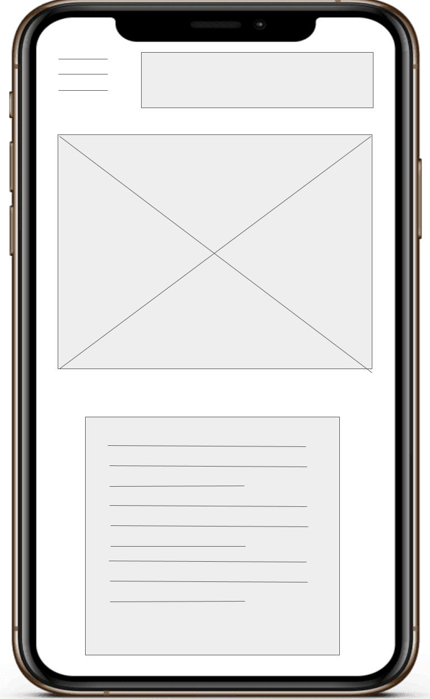
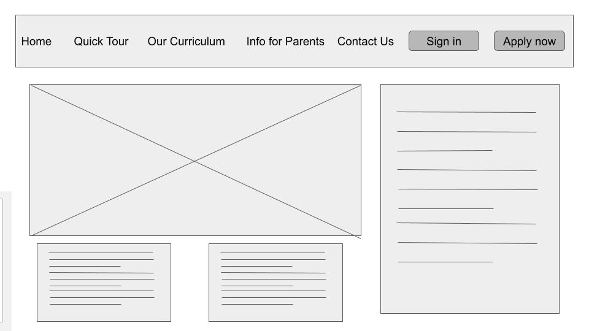

“Kids On Tech” is a bold and intentional name. It reflects our mission to build children's lives around technology from an early age—empowering them to become capable, adaptable, and ethically responsible leaders of tomorrow. “On Tech” is both literal and aspirational. The acronym, KOT, is short, memorable, and catchy.
Tagline: "Leave a mark. Shape the Furture."
Logo Inspiration: The primary color is beetroot—a rich magenta hue that symbolizes confidence and purpose. Like the beetroot, our children will leave a meaningful mark on the world.
This website promotes Kids On Tech, a pioneering school that introduces children to technology through a hands-on, everyday learning experience. The site will provide information about the school's mission, vision, courses, and enrollment. For now, the site is informational. Future updates will provide access to course materials and interactive games for enrolled learners.
The main audience is parents—those interested in enrolling their children in a forward-thinking school environment. The secondary audience is the children themselves, who will eventually engage with fun, tech-based learning tools.
| Color Name | Color |
|---|---|
| Beetroot Magenta | |
| Used for headings, call-to-action buttons, and accents. Symbolizes boldness and the impact we want children to leave on the world. | |
| Gold | |
| Used for highlights and icons. Represents brilliance, warmth, and the value each child brings. | |
| Soft Gray (Background) | |
| Used as a background color to ensure readability and a calm, clean look. | |
This font will be used for headings on the parent-facing side of the website. It's clean, rounded, and highly readable — striking a balance between playful and professional.
This font is chosen for body text on the parent site. It has a soft, modern feel that keeps the interface approachable and easy to digest.
Fredoka will be used for all kid-facing content, including lessons and games. Its bold, round letters are fun without being overwhelming — perfect for a young audience just beginning to read.

